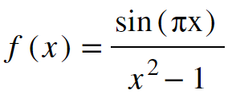
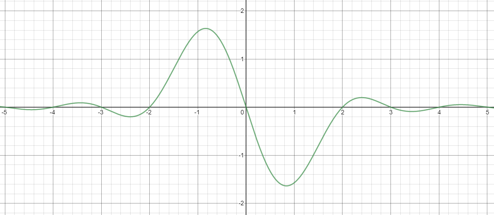
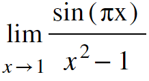
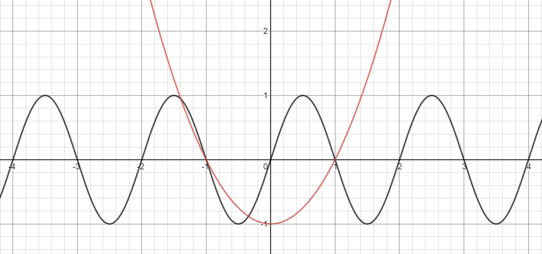
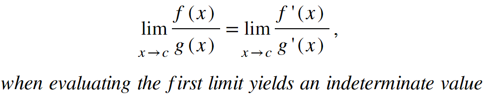

Keaton Hawkins AP Calculus AB Final
You must have a working knowledge of derivatives before reading this page
Just as we can use limits to define derivatives, derivatives can play a helpful role in evaluating limits. Consider the following function and its graph:


Suppose we wanted to find the value of this function at x = 1. Plugging in 1, we get sin(π)/(12-1) = 0/0, which is indeterminate. So we can't find the value of the function at x = 1, but we can ask what the function approaches as x approaches 1. That is, we can evaluate the following statement:

But how would we evaluate this limit? It seems pretty difficult to manipulate the expression algebraically in order to eliminate the indeterminancy. To answer this, let's consider the functions in the numerator and denominator separately. See them graphed together below:

As you can see, the graphs both equal zero at x = 1. Let's consider what happens when we nudge the input by an infinitesimally small amount, dx. Remember we think of dx as going to zero, so as it approaches 0, the corresponding change in output for each function will get closer and closer to zero too, and thus approach the actual value of the function at x = 1 (which is zero for both functions). If we take the ratio between these two output changes, we get d(sin(πx)) / d(x2 - 1). Remember, the expressions in the numerator and denominator each approach zero as dx approaches zero, so this ratio is extremely close to 0/0. Now, Let's say f(x) = sin(πx) and g(x) = x2 - 1. Our ratio then becomes (f'(x)dx) / (g'(x)dx). Of course, the dx in the numerator cancels out with the dx in the denominator. So, we're left with f'(x) / g'(x). And remember that this ratio becomes a better and better approximation of f(x)/g(x) at the value x = 1, as dx approaches zero. This is because as the change in x goes to zero, the change in each function value also goes to zero, so after the limiting process, each resultant derivative is only an infinitesimal distance away from the original function at x = 1. This only holds true at x = 1, because that's the only point where attempting to find the ratio between the two functions yields 0/0. d(f(x)) and d(g(x)) each measure the change in their respective functions. So, they only accurately approximate their respective functions at the points where there respective functions equal zero.
In any case, this rule holds up for any function. Whenever the limit of the ratio between two functions evaluates to 0/0 or ∞/∞, you can take the derivative of the numerator and denominator and take the limit of that new expression. This is called L'Hôpital's Rule:
